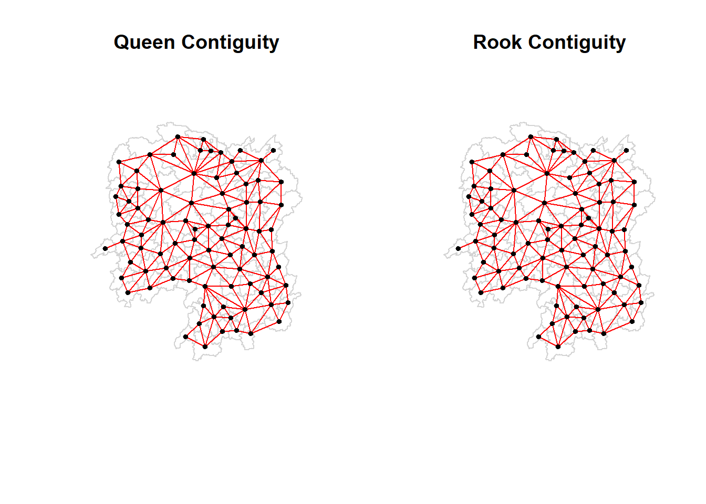

pacman::p_load(sf, spdep, tmap, tidyverse)Spatial Weights and Applications
In this hands-on exercise, we learn how to compute spatial weights and spatially lagged in R using the spdep package.
This exercise is based on Chapter 8 of Dr Kam’s online book which can be accessed here.
Getting Started
Data Sources
Data for this exercise are based on the Hunan county coming from two files:
Hunan county boundary layer in ESRI shapefile format
Hunan local development indicators for 2012 stored in a csv file
Installing and launching R packages
This exercise will make use of five R packages: sf, tidyverse, tmap, and spdep.
sf - for importing, managing and processing vector-based geospatial data
tidyverse - collection of packages for performing data importation, wrangling and visualization
tmap - for plotting cartographic quality maps
spdep - functions to create spatial weights
The code chunk below uses p_load() of pacman package to check if the packages are installed in the computer. It installs them first if they are not. It then loads them into R.
Data Import and Preparation
Data Loading
The code chunk below uses st_read() of the sf package to load the Hunan shapefile into an R object.
hunan <- st_read(dsn = "data/geospatial",
layer = "Hunan")Reading layer `Hunan' from data source
`C:\drkrodriguez\ISSS626-GAA\Hands-on\Hands-On_Ex06\data\geospatial'
using driver `ESRI Shapefile'
Simple feature collection with 88 features and 7 fields
Geometry type: POLYGON
Dimension: XY
Bounding box: xmin: 108.7831 ymin: 24.6342 xmax: 114.2544 ymax: 30.12812
Geodetic CRS: WGS 84The following code chunk imports the second data source, a csv file, into an R object using read_csv() of the readr package.
hunan2012 <- read_csv("data/aspatial/Hunan_2012.csv")Rows: 88 Columns: 29
── Column specification ────────────────────────────────────────────────────────
Delimiter: ","
chr (2): County, City
dbl (27): avg_wage, deposite, FAI, Gov_Rev, Gov_Exp, GDP, GDPPC, GIO, Loan, ...
ℹ Use `spec()` to retrieve the full column specification for this data.
ℹ Specify the column types or set `show_col_types = FALSE` to quiet this message.We can examine the contents of the two objects by calling them.
hunanSimple feature collection with 88 features and 7 fields
Geometry type: POLYGON
Dimension: XY
Bounding box: xmin: 108.7831 ymin: 24.6342 xmax: 114.2544 ymax: 30.12812
Geodetic CRS: WGS 84
First 10 features:
NAME_2 ID_3 NAME_3 ENGTYPE_3 Shape_Leng Shape_Area County
1 Changde 21098 Anxiang County 1.869074 0.10056190 Anxiang
2 Changde 21100 Hanshou County 2.360691 0.19978745 Hanshou
3 Changde 21101 Jinshi County City 1.425620 0.05302413 Jinshi
4 Changde 21102 Li County 3.474325 0.18908121 Li
5 Changde 21103 Linli County 2.289506 0.11450357 Linli
6 Changde 21104 Shimen County 4.171918 0.37194707 Shimen
7 Changsha 21109 Liuyang County City 4.060579 0.46016789 Liuyang
8 Changsha 21110 Ningxiang County 3.323754 0.26614198 Ningxiang
9 Changsha 21111 Wangcheng County 2.292093 0.13049161 Wangcheng
10 Chenzhou 21112 Anren County 2.240739 0.13343936 Anren
geometry
1 POLYGON ((112.0625 29.75523...
2 POLYGON ((112.2288 29.11684...
3 POLYGON ((111.8927 29.6013,...
4 POLYGON ((111.3731 29.94649...
5 POLYGON ((111.6324 29.76288...
6 POLYGON ((110.8825 30.11675...
7 POLYGON ((113.9905 28.5682,...
8 POLYGON ((112.7181 28.38299...
9 POLYGON ((112.7914 28.52688...
10 POLYGON ((113.1757 26.82734...hunan2012# A tibble: 88 × 29
County City avg_wage deposite FAI Gov_Rev Gov_Exp GDP GDPPC GIO
<chr> <chr> <dbl> <dbl> <dbl> <dbl> <dbl> <dbl> <dbl> <dbl>
1 Anhua Yiyang 30544 10967 6832. 457. 2703 13225 14567 9277.
2 Anren Chenz… 28058 4599. 6386. 221. 1455. 4941. 12761 4189.
3 Anxiang Chang… 31935 5517. 3541 244. 1780. 12482 23667 5109.
4 Baojing Hunan… 30843 2250 1005. 193. 1379. 4088. 14563 3624.
5 Chaling Zhuzh… 31251 8241. 6508. 620. 1947 11585 20078 9158.
6 Changning Hengy… 28518 10860 7920 770. 2632. 19886 24418 37392
7 Changsha Chang… 54540 24332 33624 5350 7886. 88009 88656 51361
8 Chengbu Shaoy… 28597 2581. 1922. 161. 1192. 2570. 10132 1681.
9 Chenxi Huaih… 33580 4990 5818. 460. 1724. 7755. 17026 6644.
10 Cili Zhang… 33099 8117. 4498. 500. 2306. 11378 18714 5843.
# ℹ 78 more rows
# ℹ 19 more variables: Loan <dbl>, NIPCR <dbl>, Bed <dbl>, Emp <dbl>,
# EmpR <dbl>, EmpRT <dbl>, Pri_Stu <dbl>, Sec_Stu <dbl>, Household <dbl>,
# Household_R <dbl>, NOIP <dbl>, Pop_R <dbl>, RSCG <dbl>, Pop_T <dbl>,
# Agri <dbl>, Service <dbl>, Disp_Inc <dbl>, RORP <dbl>, ROREmp <dbl>Performing relational join
The code chunk below will be used to import columns from hunan2012 into hunan using left_join() of the dplyr package.
hunan <- left_join(hunan,hunan2012)%>%
select(1:4, 7, 15)Joining with `by = join_by(County)`Visualising Regional Development Indicator
The code chunk below uses tmap package to create two side by side maps of the basemap and a choropleth map based on the GDPPC attribute.
basemap <- tm_shape(hunan) +
tm_polygons() +
tm_text("NAME_3", size=0.5)
gdppc <- qtm(hunan, "GDPPC")
tmap_arrange(basemap, gdppc, asp=1, ncol=2)
Computing Contiguity Spatial Weights
The poly2nb() of the spdep package computes contiguity weight matrices for a study area. This builds a neighbour list based on regions with contiguous boundaries. The function includes a queen argument which defaults to TRUE. This argument dictates whether the Queen criteria will be used in building a list of first order neighbours.
Computing (QUEEN) contiguity based neighbours
The code chunk below computes for a Queen contiguity weight matrix and displays a summary.
wm_q <- poly2nb(hunan, queen=TRUE)
summary(wm_q)Neighbour list object:
Number of regions: 88
Number of nonzero links: 448
Percentage nonzero weights: 5.785124
Average number of links: 5.090909
Link number distribution:
1 2 3 4 5 6 7 8 9 11
2 2 12 16 24 14 11 4 2 1
2 least connected regions:
30 65 with 1 link
1 most connected region:
85 with 11 linksThe output shows that:
There are 88 units in the dataset.
The most connected unit has 11 neighbours (and only one unit has 11 neighbours)
There are two units with only one neighbour.
The resulting polygon object wm_q lists all neighboring polygons for each polygon. For example, the following code will show the neighbors of the first polygon:
wm_q[[1]][1] 2 3 4 57 85This shows that there are 5 neighbors for the first polygon. The numbers denote the id of those neighbors as they are stored in hunan.
We can retrieve the names of those polygons or units using the code chunk below. The columns County and NAME_3 contain the same value so either may be used to return the names
hunan$County[1][1] "Anxiang"hunan$NAME_3[c(2,3,4,57,85)][1] "Hanshou" "Jinshi" "Li" "Nan" "Taoyuan"We can retrieve the GDPPC of these countries using the code below (for polygon 1 and then for its five neighbours)
hunan$GDPPC[1][1] 23667hunan$GDPPC[wm_q[[1]]][1] 20981 34592 24473 21311 22879The complete weight matrix can be displayed by using str(), i.e., str(wm_q)
Computing (ROOK) contiguity based neighbours
The code chunk below computes the Rook contiguity weight matrix by setting the queen argument to FALSE
wm_r <- poly2nb(hunan, queen=FALSE)
summary(wm_r)Neighbour list object:
Number of regions: 88
Number of nonzero links: 440
Percentage nonzero weights: 5.681818
Average number of links: 5
Link number distribution:
1 2 3 4 5 6 7 8 9 10
2 2 12 20 21 14 11 3 2 1
2 least connected regions:
30 65 with 1 link
1 most connected region:
85 with 10 linksThe report shows a few differences compared to the earlier QUEEN contiguity matrix. The most connected area has 10 instead of 11 neighbors, and there are differences in the details from the number of nonzero links to the average number of links.
Visualizing contiguity weights
In this section, we introduce connectivity graphs which displays lines between neighboring points. As we are working with a polygon object at the moment, we would need to convert or define points to represent them first before attempting to build a connectivity graph. The most common method to do this is by choosing the centroid as the point for the polygon
Getting longitude and latitude of polygon centroids
The process is slightly complicated as we cannot immediately simply run st_centroid() on the object.
First, we need to get the coordinates of the polygons in separate dataframe by using a mapping function. The code chunk below create a dataframe for the centroids along the longitude by using st_centroid() on the geometry longitude using double bracket notation.
longitude <- map_dbl(hunan$geometry, ~st_centroid(.x)[[1]])For the latitudes, we use a similar code with the only difference being the index referenced by the double bracket notation.
latitude <- map_dbl(hunan$geometry, ~st_centroid(.x)[[2]])We can then use cbind() to combine the two objects into a single object for the centroid locations.
coords <- cbind(longitude, latitude)We can confirm that the points are formatted correctly by checking the first few records with head()
head(coords) longitude latitude
[1,] 112.1531 29.44362
[2,] 112.0372 28.86489
[3,] 111.8917 29.47107
[4,] 111.7031 29.74499
[5,] 111.6138 29.49258
[6,] 111.0341 29.79863Plotting Queen contiguity based neighbours map
The code below creates the connectivity graph based on the matrix in wm_q
plot(hunan$geometry, border="lightgrey")
plot(wm_q, coords, pch = 19, cex = 0.6, add = TRUE, col= "red")
Plotting Rook contiguity based neighbours map
The code below creates the connectivity graph based on the matrix in wm_r
plot(hunan$geometry, border="lightgrey")
plot(wm_r, coords, pch = 19, cex = 0.6, add = TRUE, col = "red")
Plotting Queen and Rook contiguity based neighbours map
The code below creates the connectivity graph for both queen and rook based contiguity and show theem side by side
par(mfrow=c(1,2))
plot(hunan$geometry, border="lightgrey", main="Queen Contiguity")
plot(wm_q, coords, pch = 19, cex = 0.6, add = TRUE, col= "red")
plot(hunan$geometry, border="lightgrey", main="Rook Contiguity")
plot(wm_r, coords, pch = 19, cex = 0.6, add = TRUE, col = "red")
Computing distance-based neighbours
In this section, we will use dnearneigh() of the spdep package to derive the distance-based weight matrices. This function identifies neighbours by Euclidean distance based on a lower (d1) and upper (d2) bound based on the bounds argument.